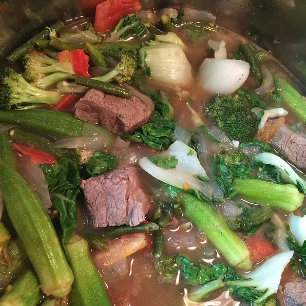

Beef Sinigang

This is a Filipino dish, and as a Filipino who loves this dish, I hope you try this one out yourself!
It's a very soupy dish, plus the tomatoes and tamarind would make this really sour. I love having this during colder seasons!
Ingredients
- 2 tablespoons canola oil
- 1 large onion, chopped
- 2 cloves garlic, chopped
- 1 pound beef stew meat, cut into 1 inch cubes
- 1 quart water
- 2 large tomatoes, diced
- ½pound fresh green beans, rinsed and trimmed
- ½ medium head bok choy, cut into 1 1/2 inch strips
- 1 head fresh broccoli, cut into bite size pieces
- 1 (1.41 ounce) package tamarind soup base
Directions
- Heat oil in medium stock pot. Saute onion and garlic until tender. Add beef to pot, and saute until browned. Pour in water. Bring to a boil, reduce heat, and simmer 20 to 30 minutes.
- Place tomatoes and green beans in pot, and continue to simmer for 10 minutes. Stir in bok choy, broccoli and tamarind soup mix. Simmer for an additional 10 minutes.